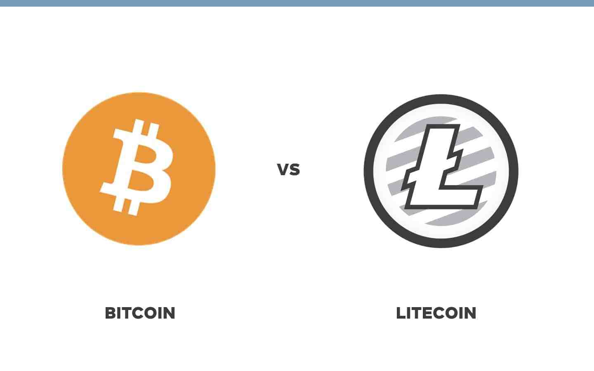

Altcoins are all cryptocurrencies that are not Bitcoin. Although there are thousands of other cryptocurrencies, Bitcoin is still the largest by far and has the greatest value. Although Bitcoin for the foreseeable future is very promising, there are certain things that altcoins do better. Specialization in certain niches of the cryptocurrency world is what altcoins are good at. Altcoins are the alternative cryptocurrencies launched after the success of Bitcoin. Generally, they project themselves as better substitutes for Bitcoin. The success of Bitcoin as the first peer-to-peer digital currency paved the way for many to follow. Many altcoins are trying to target any perceived limitations that Bitcoin has and come up with newer versions with competitive advantages. As the term 'altcoins' means all cryptocurrencies which are not Bitcoin, there are hundreds of altcoins.
Bitcoin may still be king but it does not do everything perfectly. Altcoins were first made to improve the technology behind crypto, like Litecoin which sole goal was to increase the processing speed of transactions on the blockchain.
The second-biggest cryptocurrency right now is Ethereum. Ethereum was created to allow for the creation of decentralized applications, applications that work on the Ether blockchain making it impervious to attempts to shut it down. Decentralized applications run the Ethereum blockchain, making them fast and very powerful. Being decentralized also has inherent benefits, such as unparalleled security, censorship resistance, and accessibility to anyone.

Introduced in the fall of 2011, Litecoin was called the silver to Bitcoin's gold. While very similar in code and function to Bitcoin, Litecoin is different from Bitcoin in several important ways. It allows mining transactions to be approved in 2 minutes, compared to Bitcoins 10 minutes, and it also allows for a total of 84 million coins to be created - 4 times more than Bitcoin's 21 million coins.
It also uses a different algorithm than Bitcoin, scrypt, a sequential function that is much more memory-hard than most proof-of-work algorithms. This is supposed to make it harder to generate bitcoins, as increasing memory space required for the proof-of-work algorithm reduces the mining speed, and makes it harder for any one person to control the blockchain. As of this year, there are thousands of cryptocurrencies available, all but one of which are altcoins. New cryptocurrencies can be created at any time; additionally, there are many older cryptocurrencies that have gone to zero and are now worthless.
